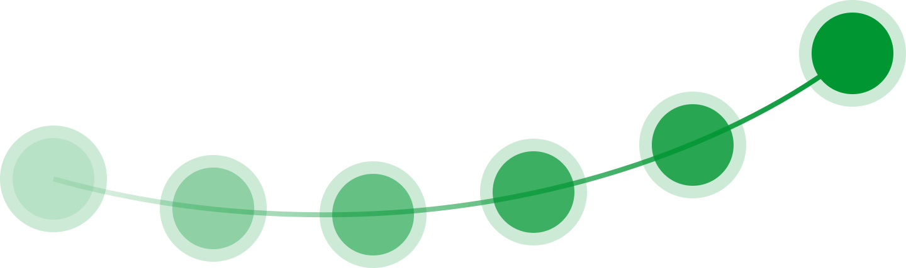
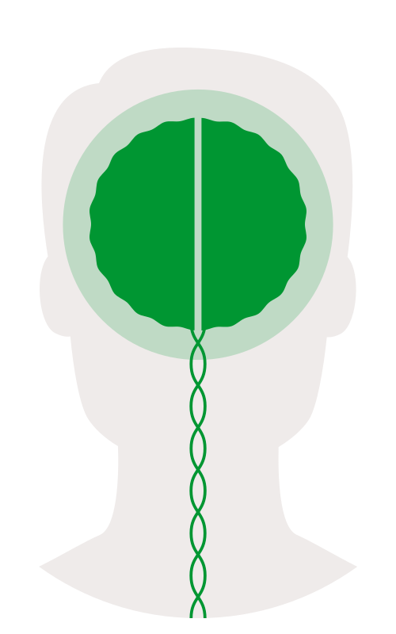
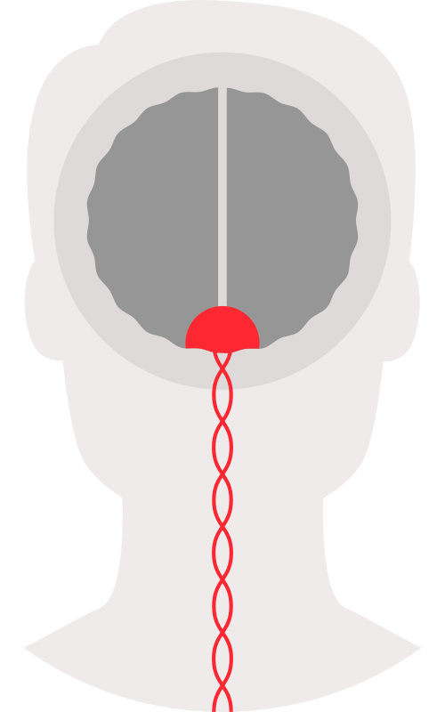
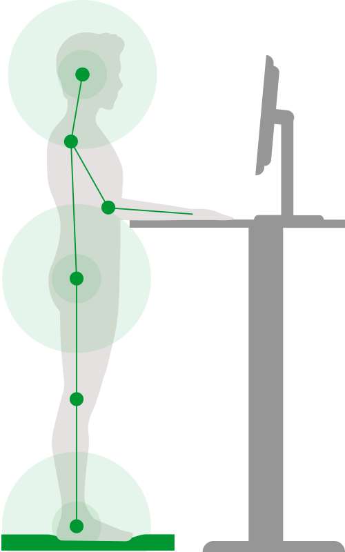
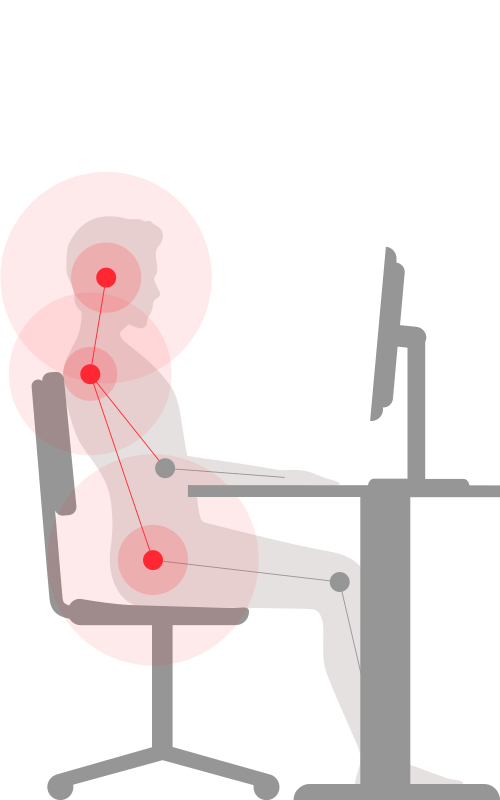

Konzentration, Hören und Verstehen, Merkfähigkeit und Flexibilität, Neuro-Agility
play stress away® Konzept
Wirkungsvolle Prävention und Aktivierung dank neurobiologischen Fakten

Aktivierung
Basierend auf aktuellsten neurobiologischen Fakten wird das Stresssystem vom Arbeitgeber zusammen mit den Mitarbeitenden verstanden. Es wird gemeinsam erarbeitet, mit welchen Massnahmen und Verhaltensweisen die Stresslevel vor Ort gemindert werden können.
Wie die bestehenden Stressspeicher abgebaut werden können und eine gesündere Arbeitsumgebung entwickelt werden kann, wird trainiert.
Verankerung
Neue Gewohnheiten benötigen ca. drei Monate und vierzig Wiederholungen, bis sie verankert sind. Damit sich diesmal die Arbeitsumgebung und die Verhaltensweisen tatsächlich verändern, begleiten wir Sie während dieser kritischen Phase in wöchentlichen kurzen Sessions - das Know how wird vertieft und die wirkungsvollen Übungen mit Freude gefestigt.
Damit entwickeln wir neuro-agile Arbeitsverhältnisse, in denen Menschen mit optimalen Hirnnutzungsfähigkeiten ihre volle Wirkung entfalten können. Die dynamisierte Arbeitsumgebung fördert die trainierte Body-Agility weiter und sorgt dafür, dass das Leben der Menschen in ihrer Arbeitswelt, weiterhin agil bleibt und gesünder wird. Arbeitnehmende und Arbeitgeber in agiler Arbeitsumgebung sind wieder im Besitz ihrer Hirnnutzungsfähigkeiten und im Stande die Ziele mit Freude zu erreichen und zufriedene Kunden weiter aufzubauen.


Neuro-Agility
Neuro-Agility mit optimal aktivierten Hirnnutzungsfähigkeiten fördert die konstruktive Zusammenarbeit, Freude an der Arbeit und hervorragenden Umgang mit den geschätzten Kunden.
Arbeitnehmende und Arbeitgeber in agiler Arbeitsumgebung sind wieder im Besitz ihrer Hirnnutzungsfähigkeiten und im Stande die Ziele mit Freude zu erreichen und zufriedene Kunden weiter aufzubauen. Auch Ausfallzeiten werden damit nachhaltig gemindert und die Mitarbeitenden verfügen über eine klar verbesserte Work-Life-Balance.


Body-Agility
Body-Agility bringt Bewegung in den Alltag. Geistige Beweglichkeit wird in einem dynamisierten Arbeitsumfeld weiter gefördert.
Fit und gesund ohne zusätzlichen Zeitaufwand - auf der kybun Matte im Büro wird die Muskulatur gestärkt, die Gelenke geschont sowie Nacken- und Schulterverspannungen gelöst. Die Fussmuskulatur wird im Alltag ideal gefördert und gefordert und hält Körper und Geist wach. Arbeitszufriedenheit und Produktivität verbessern sich spürbar, so dass Ausfallzeiten nachhaltig gemindert werden.